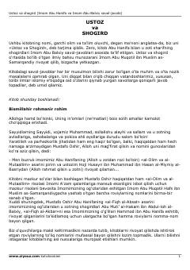

UVImom Abu Hanifa va shogirdining islomiy e'tiqod hamda bilimga oid savol-javoblari.
Ushbu kitob Imom Abu Hanifa va uning shogirdi Imom Abu Balxiy o'rtasidagi islomiy e'tiqod va bilimga oid savol-javoblar asosida tuzilgan. Risolada dindagi nozik masalalar, tolibi ilmlarni qiynaydigan savollar hamda ularning ilmiy asoslangan javoblari bayon etilgan.